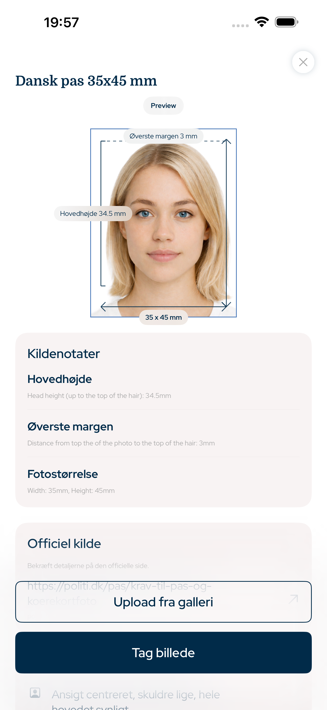

Danmark · pasfoto app, dansk pasfoto, pasfoto til dansk pas, passfoto, pasfoto iPhone
Pasfoto til dansk pas med korrekt størrelse og beskæring
Denne iPhone-app hjælper med pasfoto, ID-foto, visumfoto og kørekortfoto med præcis fotostørrelse, hovedproportion, toppadding, baggrund og eksport til print eller digital brug.
- Ansigt
- Ingen AI-ændring
- Beskæring
- Hoved + topmargen
- Eksport
- Digital + print

Topmargen
præcis
Hovedproportion
styret
Søgbare krav
Bygget på officielle fotoregler
Appen fokuserer på målbare regler for dokumentfotos: fotostørrelse, pixeleksport, hovedhøjde, ansigtets placering, toppadding, baggrund og printlayout.
Hovedproportion og toppadding
Ingen AI-ændring af ansigtet
Digital fil og printark
Danmark document types
Fotos denne app kan forberede
Pasfoto App til Dansk Pas dækker de mest almindelige officielle fotoprocesser for iPhone-brugere, der har brug for en digital fil eller et printklart ark.
Dansk pasfoto
ID-foto
Visumfoto
Kørekortfoto
Printark
Fotointegritet
Ingen AI-ændring af ansigtstræk
Arbejdsgangen er bevidst praktisk: beskær billedet, juster hovedet, bevar ansigtet, forbered baggrunden og eksporter den rigtige størrelse. Det er beregnet til forberedelse af officielle dokumentfotos, ikke skønhedsretuschering.
1Vælg land og dokument
2Juster hoved og toppadding
3Eksporter digital fil eller printark
Spørgsmål
FAQ
Kan appen lave pasfoto til dansk pas?
Ja. Vælg Danmark og pas, så hjælper appen med størrelse, hovedproportion, beskæring og eksport.
Ændrer appen ansigtet med AI?
Nej. Appen ændrer ikke ansigtstræk. Den arbejder med beskæring, størrelse, baggrund og eksport.
Kan jeg printe billedet?
Ja. Du kan eksportere et printklart ark eller en digital fil.
Pasfoto App til Dansk Pas
Lav pasfoto til dansk pas på iPhone med korrekt fotostørrelse, hovedproportion, toppadding, beskæring og printklar eksport.
Hent i App Store